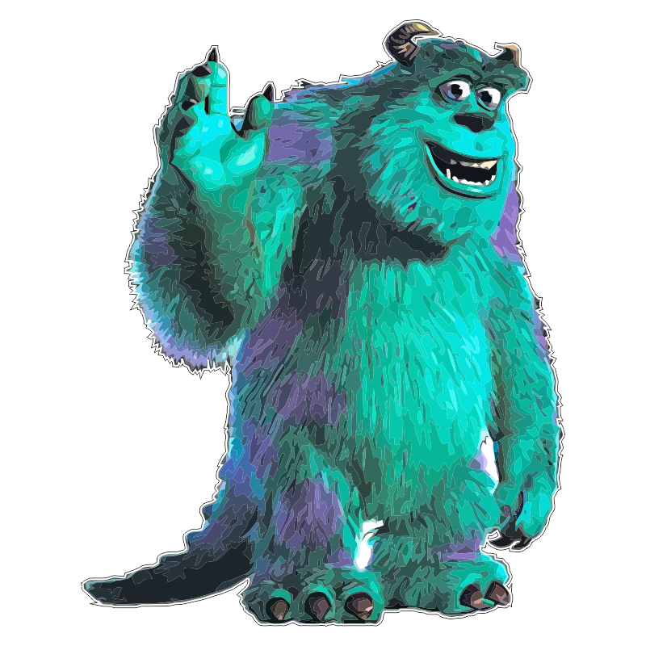
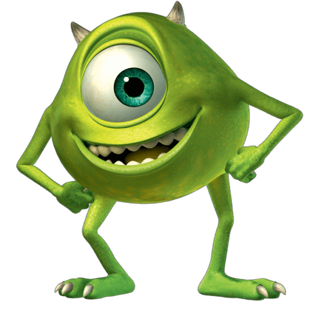

Monsters University is the first Pixar film that used global illumination, a new lighting system introduced as part of the overhaul of the rendering system used since the first Toy Story film. In the planning stage of the film, director of photography, Jean-Claude Kalache, asked "What if we made these lights just work?" Before the new system, artists had to build reflections and shadows manually, which became increasingly complex as the models and the setups became more technologically advanced.
Monsters, un.
Monsters University is a 2013 American computer-animated monster comedy film produced by Pixar Animation Studios and released by Walt Disney Pictures. It was directed by Dan Scanlon (in his feature directorial debut) and produced by Kori Rae, with John Lasseter, Pete Docter, Andrew Stanton, and Lee Unkrich serving as executive producers. Scanlon also wrote the screenplay and story with Dan Gerson and Robert L. Baird. The music for the film was composed and conducted by Randy Newman, making it his seventh collaboration with Pixar. It is a prequel to Monsters, Inc. (2001), making it the only time Pixar has made a prequel film. Monsters University tells the story of the main characters of Monsters, Inc., James P. Sullivan and Mike Wazowski, and their time at college, where they start off as rivals, but slowly become best friends. During the time, they must learn to work together, along with Oozma Kappa members, in order to make his dream reality and things right. John Goodman, Billy Crystal, Steve Buscemi, Bob Peterson, and John Ratzenberger reprise their roles as James P. Sullivan, Mike Wazowski, Randall Boggs, Roz, and the Abominable Snowman, respectively, while the new cast were joined by Helen Mirren, Alfred Molina, Peter Sohn, Joel Murray, Sean Hayes, Dave Foley, Charlie Day, and Nathan Fillion. Bonnie Hunt, who voiced Ms. Flint in the first film, voices Mike's grade school teacher Ms. Karen Graves.
Plot
As a first grader, Mike Wazowski begins to dream of becoming a Scarer - a monster who enters the human world at night to scare children and harvest their screams for energy to power the city of Monstropolis. Eleven years later, Mike enrolls in the Scaring program at Monsters University (MU) and meets classmate James P. "Sulley" Sullivan. Abigail Hardscrabble, dean of MU, warns students that anyone who does not pass a final exam at the end of the first semester will have to leave the Scaring program. As the semester progresses, an intense rivalry forms between Mike, who studies hard to improve himself, and Sulley, who relies only on his natural talent and begins to falter. They both attempt to join a fraternity, but only Sulley is accepted into Roar Omega Roar (ROR), the most prestigious house on campus. At the final exam, a fight between the duo inadvertently destroys Hardscrabble’s prize scream canister. Hardscrabble tests them separately and fails them both -- Mike for not being scary, Sulley for choosing the wrong approach to scare a child without having all the relevant information about them. They are forced to transfer to a different study program, much to their dismay. Wanting to prove himself, Mike learns of MU's "Scare Games" competition and makes a deal with Hardscrabble. If his team wins, all of the members will be admitted to the Scaring program, otherwise, he will leave MU. Mike joins Oozma Kappa (OK), a fraternity of misfits, but they are one member short of being able to enter the competition. Sulley offers to join OK, as it is his only chance to return to Scaring, and Mike reluctantly accepts. OK finishes last in the first round but are saved from elimination after another team is disqualified for cheating. During each of the next three rounds, OK steadily improves due to Mike's knowledge of scaring and the others' unique talents. Despite their progress, they face humiliation by rival fraternities, and Hardscrabble questions whether Sulley believes that Mike can be an effective Scarer. Though OK earns a decisive victory over ROR in the final round, Mike discovers afterward that Sulley had tampered with the simulator settings to guarantee a win for OK, causing a heated argument between them. The other OK members discard their trophy, equally ashamed that Sulley ruined their victory by cheating. Sulley confesses to Hardscrabble what he has done. Outraged at Sulley's betrayal and still determined to prove that he can become a Scarer, Mike breaks into the school's door lab and enters the human world. He emerges in a summer camp cabin full of children but is unable to scare any of them and flees into the woods. With assistance from the OK members, Sulley sneaks through the door to find Mike, ignoring Hardscrabble's order to stay away and let the authorities handle the situation. Sulley finds Mike and tells him he cheated because he was afraid of failing his team and everyone on the campus because Mike was not scary. He also admits that, despite being a Sullivan, he is not as great of a success as his family. They reconcile and try to return to MU, but find out that Hardscrabble has deactivated the door. As police officers begin to chase Mike and Sulley, Mike realizes that they may be able to power the door from their side. Working together, they scare the officers so badly that their screams overload the door, then return to MU just as it explodes. Mike and Sulley are punished and expelled from MU for their actions, but the remaining OK members are admitted into the Scaring program for the coming semester, impressing Hardscrabble with their performance in the Scare Games. As Mike and Sulley are leaving the campus, Hardscrabble admits that they have surprised her and expresses her hope that they will continue to do so in the future. Seeing a "help wanted" advertisement for job openings at Monsters, Inc., they decide to apply and are hired to work in the mailroom. They work their way up to different jobs before being scarer and scare assistant respectively.
Music
Monsters Inc. was Randy Newman's fourth feature film collaboration with Pixar. The end credits song "If I Didn't Have You" was sung by John Goodman and Billy Crystal.[17] The album was nominated for the Academy Award for Best Original Score and a Grammy Award for Best Score Soundtrack for Visual Media. The score lost both these awards to The Lord of the Rings: The Fellowship of the Ring, but after sixteen nominations, the song "If I Didn't Have You" finally won Newman his first Academy Award for Best Original Song. It also won a Grammy Award for Best Song Written for Visual Media.
Characters
James P. “Sulley” Sullivan
James P. “Sulley” Sullivan may be the most celebrated Scarer in Monstropolis, but that doesn't make him mean. When the softhearted monster has to care for Boo, he discovers that love and laughter are more powerful than making kids scream.
Mike Wazowski
Sulley's scare assistant, best friend, and roommate doesn't want any interruptions in his life—especially in his relationships. Although Mike thinks Boo is a "killing machine" at first, he later finds she's a great audience for his natural comedic talent.


Randall Boggs
Able to scare even his co-workers with his chameleon abilities, Randall is one of the most wicked monsters in Monstropolis. His plan to capture the all-time scare record only scratches the surface of his sinister agenda.